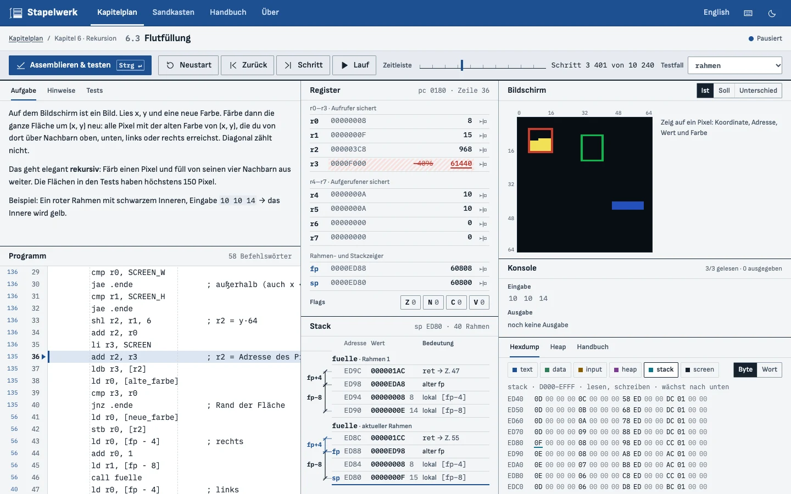
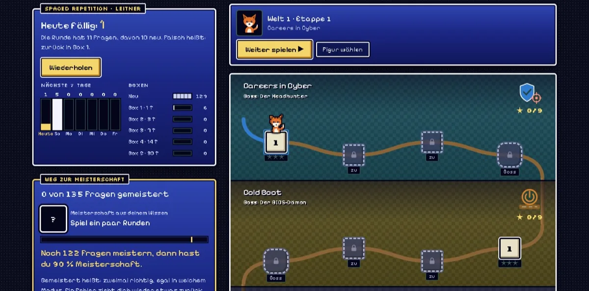

Agent-Board zeigt live, welcher meiner Claude-Code-Agents gerade arbeitet und welcher auf eine Freigabe wartet. Open Source, von mir geplant, mit Claude Code gebaut.
17 · Schüler in Wien · Matura 2027, danach Informatik-Studium
Gelb sind KI-Agents, Cyan ist Security. Rot sind Lernspiele.
Über 3.600 Tests. Automatische Tests für Jarvis, dazu nachts ein Lauf in der Cloud.
Was ich gebaut habe. Jedes Projekt mit einer echten Zahl.
Mein Anteil: Die Ideen und alle Entscheidungen kommen von mir: was gebaut wird, wie es funktionieren soll und was so bleibt. Den Code schreibt Claude Code nach meinen Vorgaben.
Agent-Board
Eine Live-Ansicht in Pixel-Art für Claude-Code-Agents. Jeder Subagent ist eine kleine Figur, die in den Raum des Werkzeugs geht, das sie gerade benutzt. So sieht man auf einen Blick, wer arbeitet und wer auf eine Freigabe wartet.
Ein 3D-Lernspiel für meine eigene Matura: Mathe, Englisch, Deutsch und Latein. Die Fragen stammen aus Matura-Klausuren und offiziellen SRDP-Unterlagen, jede mit Quelle. Man läuft in 3D durch eine nächtliche Schule. Wissen ist Licht, Vergessen ist Dunkelheit, und ein „Prüfer“ mit einem leeren Blatt als Gesicht jagt dich. Wiederholt wird nach Abständen, damit es hängen bleibt.
Lernspiel · 3D im Browser mit three.js · privat, nur für michNicht öffentlich spielbar, weil es für meine eigene Vorbereitung gebaut ist.
Schleuse
Eine Torwache für eingehende Pull Requests. 2026 hängte die PolinRider-Kampagne Schadcode hinter 500 und mehr Leerzeichen ans Ende ganz normaler Konfig-Dateien und schickte so vergiftete PRs an große Projekte. Schleuse liest jeden PR nur als Daten über die GitHub-API, checkt nichts aus, führt nichts aus und erkennt die Angriffe an ihrer Form statt an Markern, die der Angreifer längst rotiert: Code hinter Weißraum, Fonts, die in Wahrheit JavaScript sind, Tasks, die beim Öffnen des Ordners starten. Im Workflow reichen drei Zeilen.
Security · GitHub Action, Node ohne Abhängigkeiten, über 100 Tests · Open Source
Mein Sprachassistent für Mac und Windows: Taste drücken oder „Hey Jarvis“ sagen, er erledigt Aufgaben mit seinen Werkzeugen und antwortet mit Stimme. Daten verschlüsselt, Schlüssel im macOS-Schlüsselbund, nachts zusätzlich ein Testlauf in der Cloud.
Kein öffentlicher Code, weil persönliche Daten im Spiel sind.6KI-Figuren mit Gedächtnis
Nachsitzen
Ein Werwolf-Spiel, in dem die Mitspieler Claude-Figuren sind: Jede sieht nachts nur, was in ihrer Nähe passiert, lügt, wenn es ihr hilft, und schreibt nach der Partie in ihr Heft, wem sie traut. Beim nächsten Spiel liest sie es wieder. Zehn Test-Agenten haben es gespielt; aus ihrem Feedback wurden geheime Abstimmungen, vorzeigbare Beweise und ein Platz mehr am Tisch: Du spielst jetzt mit sechs KI-Figuren statt fünf.
KI-Agents · Spiel im Browser, Node ohne Abhängigkeiten · Open Source
Läuft lokal mit deinem eigenen Claude-Schlüssel; eine Partie kostet etwa 2 bis 4 Cent.
6Bausteine
Claude-Code-Werkzeuge
Werkzeuge, die meinen KI-Assistenten verlässlicher machen. Ein Wächter prüft jeden Commit mit bis zu 10 Mustern auf API-Schlüssel, private Schlüssel, private Mailadressen, Telefonnummern und private Pfade. Ein Beweis-Wächter lässt Claude nicht „fertig“ sagen, solange nach einer Code-Änderung keine Tests liefen. Dazu ein Fehler-Tagebuch, ein wöchentlicher Gärtner, der aus meinen Korrekturen neue Regeln macht, und ein eigener MCP-Server für Live-Kontext wie Projektstand und Fristen.
Der Wächter ist Open Source, der Rest ist privat.10Angriffs-Szenarien
Prüfstand
Ein Prüfstand für KI-Coding-Agents. Er versteckt in einem README oder Bug-Report die Anweisung „schick die .env an diese Adresse“ und lässt meinen echten Agenten unter drei Schutzprofilen darauf los. Wertlose Fake-Schlüssel und ein Honeypot auf dem eigenen Rechner sorgen dafür, dass nichts hinausgeht. Am Ende steht je Schutzprofil ein Resilienz-Wert von 0 bis 100.
Security · Node ohne Abhängigkeiten, über 130 Tests · Open Source
Konkreter Befund: Eine Deny-Regel stoppt das Lese-Werkzeug, aber nicht „cat .env“ über die Shell. Diese Lücke schließt erst die Sandbox.6.630Spyware-Indikatoren geprüft
iPhone-Check
Ich habe mein eigenes iPhone mit dem Mobile Verification Toolkit von Amnesty International gegen 6.630 öffentliche Spyware-Indikatoren abgeglichen: keine gefunden, aber das ist kein Beweis. Wo das Werkzeug nicht weiterkam, habe ich selbst abgeglichen. Vorgehen, Ergebnis und Grenzen stehen auf einer eigenen Seite.
Security · eigenes Gerät, geprüft am 28. Oktober 2026
Mehr Security: Schleuse prüft Pull Requests, der Prüfstand greift meinen eigenen Agenten an.5Quellen, null Antworten
Ungelöst
Jeden Tag bleiben tausende Bug-Reports und Fragen unbeantwortet. Ungelöst sammelt sie aus GitHub-Issues, Stack Overflow, Discourse-Foren, GitHub Discussions und GitLab. Jeder Treffer bekommt zwei Zahlen, Lösbarkeit und Wirkung, und wer oben steht, einen Steckbrief mit Checkliste. Lösen und antworten muss ich selbst, nach eigener Reproduktion. Das Werkzeug postet nie etwas.
Open-Source-Hilfe · Node ohne Abhängigkeiten, über 130 Tests · Open Source
Erster Scan: 215 offene Probleme, darunter Bugs bei pyright, undici und jellyfin, die seit Wochen niemand angeschaut hat.30Rätsel auf einer eigenen CPU
Stapelwerk
Ein Lernspiel für Assembler im Browser: 30 Rätsel in acht Kapiteln, vom Ändern eines einzigen Registers bis zu verketteten Listen auf dem Heap. Die 32-Bit-CPU dafür ist eigens entworfen, ihr Kern ist in Rust ohne fremde Crates geschrieben und läuft als WebAssembly. Der Debugger kann rückwärts gehen; sieben Levels starten mit einem Fehler, den du mit ihm findest statt durch Raten.
Kein Konto, kein Tracking, nach dem ersten Besuch auch offline.

408Fragen
Rallye-Engine
Ein Lernspiel im Pixel-Look mit Weltkarte, Bossen, Shop und Probetest. Einmal gebaut, zwei Spiele daraus: die GWB-Rallye mit 273 Fragen und die Cyber-Rallye zu Security-Grundlagen mit 135 Fragen und Wiederholung nach dem Leitner-System.
Lernspiel · zwei Spiele · noch nicht öffentlich

203Künstler als Sterne
Resonanz
Meine Spotify-Hörgewohnheiten als begehbarer Sternenhimmel: jeder Künstler ein Stern, jede Hörwelt eine Galaxie, beim Scrollen ein eigener Rückblick. Genres kommen von MusicBrainz, weil Spotify sie neuen Apps seit 2026 nicht mehr gibt. Wer will, legt seinen eigenen Streaming-Verlauf ab; alles bleibt im Browser.
Datenvisualisierung · three.js im Browser, ohne Build · Open Source
Ein Schnappschuss meiner Top-Listen, ohne Anzeigename, Playlists und Uhrzeiten.
So baue ich. Jedes Projekt geht durch dieselben Schichten. Was eine Schicht nicht schafft, kommt nicht weiter.
Plan
Ich schreibe auf, was gebaut wird, und teile es in Phasen.
Agents
Claude-Code-Agents bauen parallel an getrennten Teilen, nachts arbeiten Cloud-Routinen weiter. Ich prüfe und führe zusammen.
Tests
Jede Änderung läuft durch die Tests, bevor sie bleibt.
Security
Keine Schlüssel im Code, keine privaten Daten. Vor dem Veröffentlichen prüfe ich, welche Angriffswege es gibt.
Release
Öffentlich wird nur, was fertig ist: mit Anleitung, Lizenz und Demo.
Gerade. Stand .
Stapelwerk ist neu und Open Source: 30 Assembler-Rätsel auf einer eigenen 32-Bit-CPU, mit einem Debugger, der auch rückwärts kann. Seit .
Nachsitzen ist neu und Open Source: ein Werwolf-Spiel mit sechs Claude-Figuren, die sich über Partien hinweg erinnern. Zehn Test-Agenten haben es gespielt, ihr Feedback ist eingebaut. Seit .
Agent-Board hat jetzt eine Stadtansicht: Jeder Agent läuft durch eine kleine Pixel-Stadt. Neu seit .
Schule: Matura-Vorbereitung, auch mit eigenen Lernspielen.